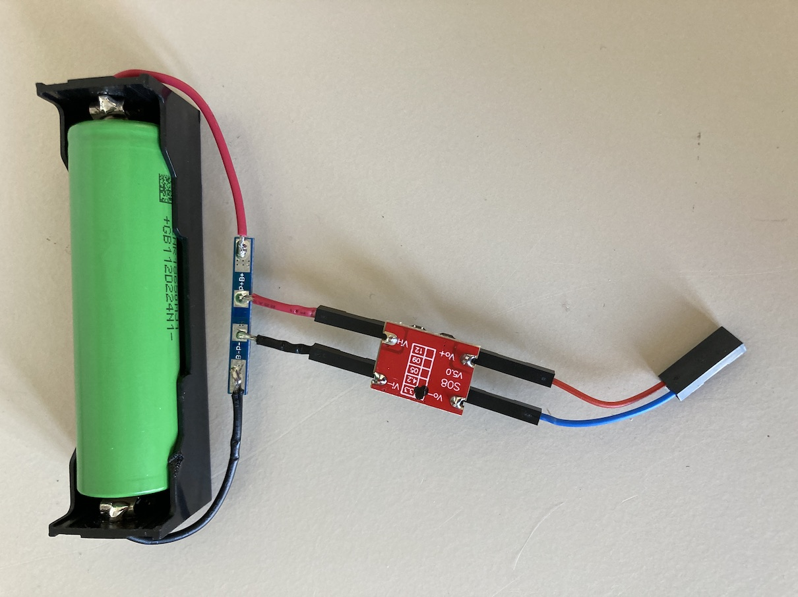
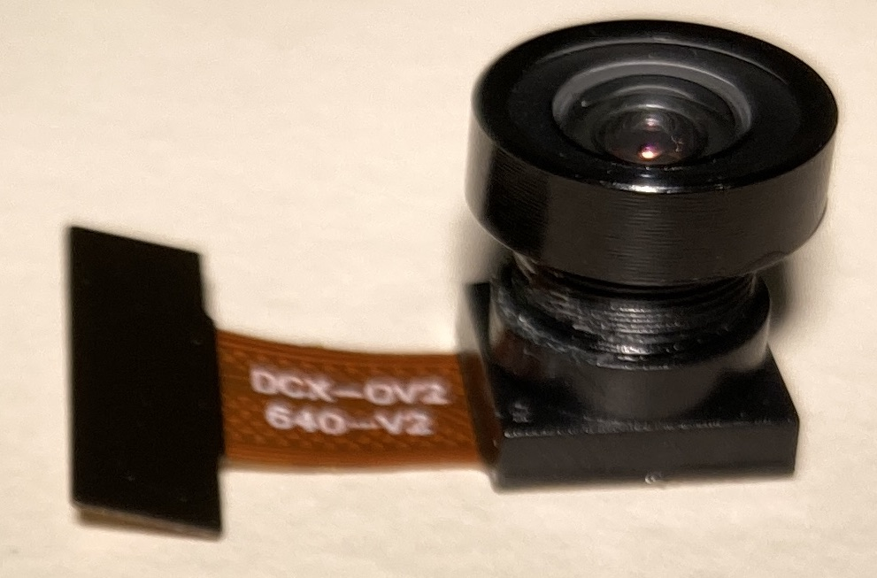
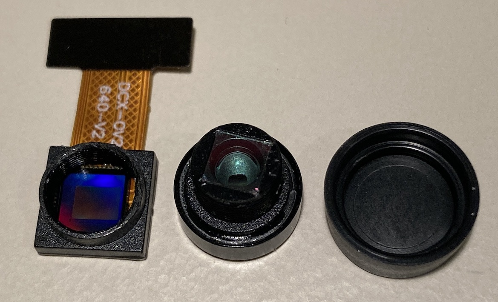
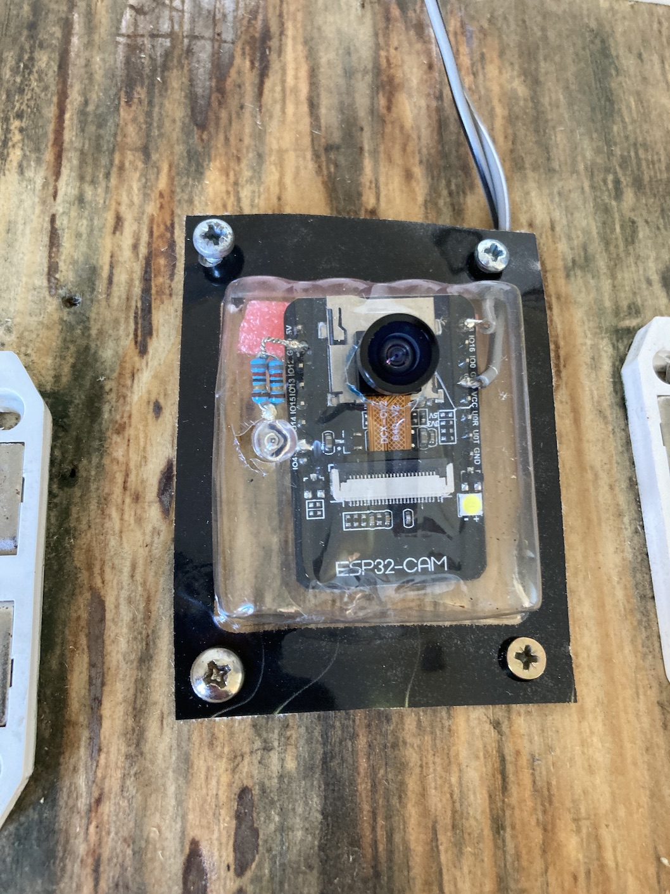
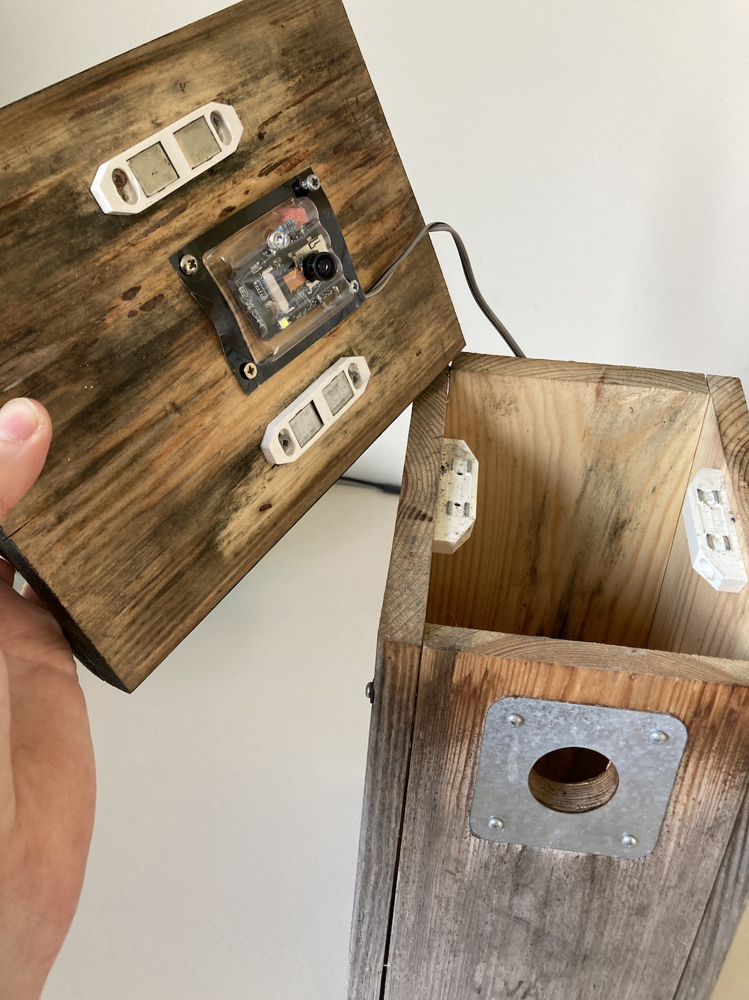
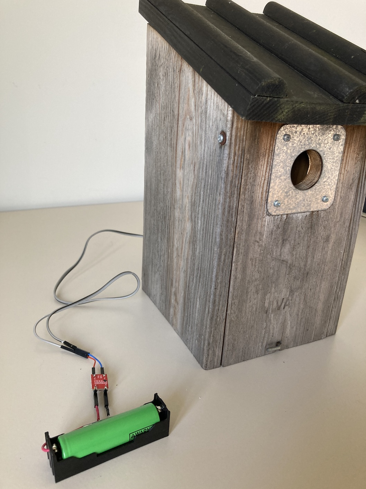
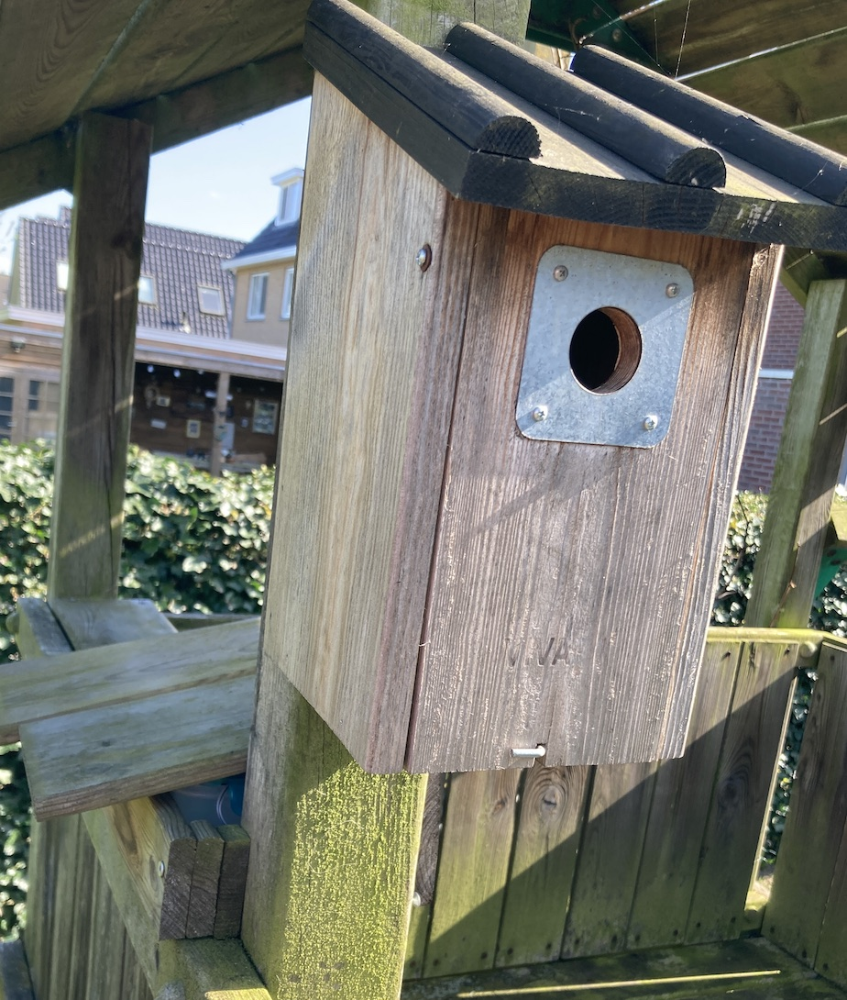
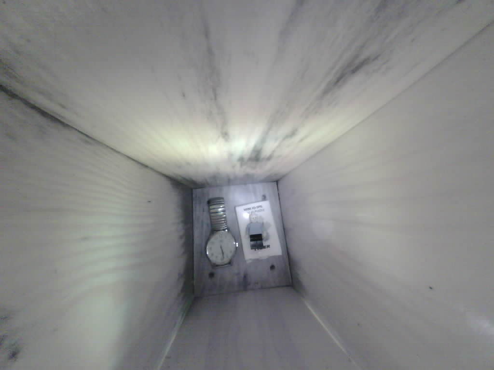
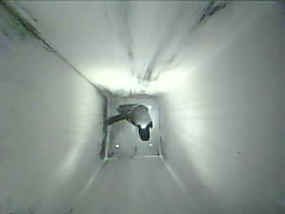
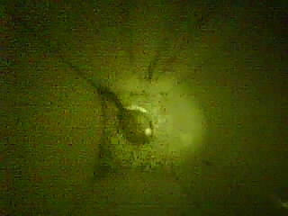

Birdhouse webcam project 2
Hardware used
- ESP32-CAM
- OV2640 camera 160 degree night vision
- 18650 Li-ion battery
- 18650 battery holder
- 3.3V buck-boost regulator
- Li-ion protection circuit 1S
- IR led
- Two 220 Ohm resistors
- Wires and DuPont connectors
- Some kind of server (see this link). I used the Raspberry Pi from Project 1.
Tools
- Soldering tools
- Something to program the ESP32. See this link.
- Computer or laptop.
- Something to charge the lithium battery. For instance this one.
- Soldering iron, screws, screw drivers, knife, etc.
Power considerations
It is not easy to create a long-lasting solution that runs on batteries. Since a wifi connection easily consumes more than 100 mA, any solution with a constant wifi connection will not work. A nice feature of the ESP32 is that it has a deep-sleep mode. In this way I can setup the project such that it takes a picture, say, every 30 minutes, sends it to a server and then go into deep sleep. The deep-sleep mode should consume a few micro-amps only, but the ESP32-CAM is not built that efficient. Standard power banks are not suited for low-current projects and they is terribly inefficient. Internally they boost the voltage from their 4.2V lithium power cells to 5V, and then the first thing the ESP32 does it regulate it down to 3.3V. For this reason I decided to go for the lithium-ion battery with 3.3V regulator. This setup runs for about 10 days.
Prepare the power from Li-ion battery
 Lithium-ion batteries should not be discharged below 2.9V or so. To prevent this, I soldered a Li-ion protection circuit directly to the battery. From there I connected the regulator with DuPont connectors such that it brings to voltage to a constant 3.3V.
Prepare and connect the camera
 The standard camera that comes with the EPS32-cam works fine, but it has an IR filter. I tried to remove the glue to open the camera but failed. Therefore I bought the 160 degree OV2640 module (see link above) with night vision. When it finally arrived I discovered that it was not with night vision at all. Fortunately, this camera was much easier to open. I carefully removed the glue and with a sharp knive. As soon as I could turn it, I removed the lens such that you can see the naked sensor. The IR filter is glued to the lens (middle in the picture below). I scratched away the glue on the IR filter and removed it.
IR LED and housing
I used a 5mm LED in series with two parallel 220 Ohm resistors and soldered this to the GPIO2 and GND pins of the ESP32-CAM. The IR LED flashes whenever a picture is taken. I soldered long wires (about a meter) to the GND and 3.3V pins on the other side. Then I used a PE AAA battery packages as a housing for the ESP32-CAM and made holes for the LED and the lens. I mounted the whole thing to the ceiling of the birdhouse. Below are some pictures of the final setup.
   Setup a server and programming the ESP32
When the ESP32 is in deep sleep I want to be able to see the pictures taken before. Therefore, the ESP32 sends the pictures via the wifi signal to a server. In my case I use a Raspberry Pi to host the server. Instructions to program the ESP32 such that it uploads pictures to a server can be found here. To program the ESP32, I use an arduino.
In addition, I wanted to be able to change the deep-sleep time or to switch to live mode (whenever the ESP32-CAM wakes up). For the live-mode I use the standard CameraWebServer code for the ESP32-CAM from the Arduino library. All code can be found here.
Picture quality
The ESP32-CAM can take pictures in different resolutions. For the highest resolution (1024x768) the quality is reasonable, but not as sharp as the ones I got with my previous project. This is the first (test) picture below. In standard operation I take pictures with a low resolution (320x240) to save bandwidth and speed up the loading of the gallery. The next picture shows a great tit exploring the inside of the birdhouse. The final picture shows that the night vision works, but the resolution is not so great.
  